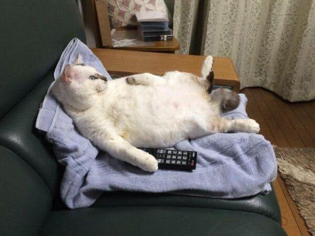

Gato flojo
Si piensas que los gatos son perezosos porque están durmiendo todo el tiempo, no te asustes. Los gatos duermen un promedio de entre 13 a 16 horas al día. Si un ser humano hiciera eso, probablemente se le calificaría con la palabra vago. Sin embargo, la edad y la salud del minino tiene mucho que ver con la cantidad de horas que va a dormir.
Los grandes felinos son nocturnos y les agrada cazar al amparo de la noche. Aunque los gatos domésticos han evolucionado, no significa que sean más activos al amanecer y duerman durante la noche.